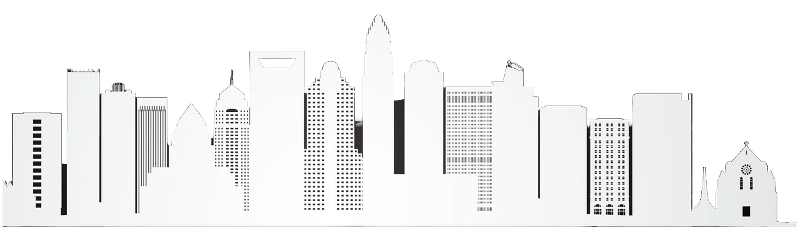

About me
I'm a computer science master's student at the University of North Carolina at Chapel Hill, where I work with Dr. Neil Gaikwad in the Society-Centered AI Lab on computer vision and human-AI value alignment. Before Chapel Hill, I did my undergrad at UNC Charlotte, where I got hooked on research early, analyzing job traces from large-scale computing clusters in the High-Performance Computing Lab with Dr. Dong Dai, and building efficient video understanding models in the Machine Learning Lab with Dr. Srijan Das.
That work has grown into publications at CVPR 2026, npj Computational Materials, JSSPP'24, and IPDPS'24. Outside the lab, I teach as a TA for DATA 120: Ethics of Data Science and AI, and I'm usually building something on the side, lately open-source developer tools and on-device AI apps. What drives all of it is simple: I like taking ideas out of papers and turning them into things people can actually use.
Peer Reviewed Selected Publications
-
MS-Temba: Multi-Scale Temporal Mamba for Efficient Temporal Action Detection
Arkaprava Sinha, Monish Soundar Raj, Pu Wang, Ahmed Helmy, Srijan Das
Published at CVPR 2026.
-
AI-Assisted Rapid Crystal Structure Generation Towards a Target Local Environment
Osman Goni Ridwan, Sylvain Pitié, Monish Soundar Raj, Dong Dai, Gilles Frapper, Hongfei Xue, Qiang Zhu
Published at npj Computational Materials, 2026.
-
An Empirical Study of Machine Learning-based Synthetic Job Trace Generation Methods.
Monish Soundar Raj, Thomas MacDougall, Di Zhang, and Dong Dai
Published at 27th JSSPP’24 (Job Scheduling Strategies for Parallel Processing), 2024.
-
Cross-System Analysis of Job Characterization and Scheduling in Large-Scale Computing Clusters.
Di Zhang, Monish Soundar Raj, Bing Xie, Sheng Di, Dong Dai
Published at 38th IPDPS'24 (IEEE International Parallel and Distributed Processing Symposium), 2024.
Joint work by researchers from UNC Charlotte, Microsoft, and Argonne National Laboratory.
News
-
[Feb. 2026] 1 Paper - MS-Temba: Multi-Scale Temporal Mamba for Efficient Temporal Action Detection accepted to CVPR 2026, Website.
-
[Aug. 2025] Joined the Society-Centered AI Lab (SAIL) at UNC Chapel Hill, working with Dr. Neil Gaikwad on Human-AI Value Alignment and Computer Vision research.
-
[Jun. 2025] 1 Poster - Crystal Structure Prediction with Deep Learning Models Using Space Group Symmetry presented at Gordon Research Conference.
-
[Jan. 2025] Started working as a Teaching Assistant for DATA 120: Ethics of Data Science and AI at UNC Chapel Hill.
-
[Jan. 2025] 1 Paper - MS-Temba: Multi-Scale Temporal Mamba for Efficient Temporal Action Detection is out, Check Here.
-
[Dec. 2024] 🎉 Excited to share that I made the Chancellor's List for Fall 2024!
-
[Sept. 2024] 1 Poster - Enhancing HPC Job Scheduling with Synthetic Data Generation for RL-Based Schedulers presented at Undergraduate Research Summer Research Symposium. Check Here.
-
[Aug. 2024] Started a new position as a Research Assistant at the AI lab under Dr. Srijan Das.
-
[May. 2024] Starting a new position as a Research Scholar.
-
[May. 2024] 🎉 Excited to share that I made the Dean's List for Spring 2024!
-
[Apr. 2024] Thrilled to announce that I have been accepted into the OUR Summer 24 Research Scholar position.
-
[Mar. 2024] Our paper about Machine Learning-based Synthetic Job Trace Generation Methods is accepted by JSSPP’24 workshop at IPDPS'24.
-
[Jan. 2024] 🏆 Made the Chancellor's List for Fall 2023 for excellent academic performance.
-
[Dec. 2023] Our paper about AI and HPC job traces analysis is accepted to IPDPS'24.
-
[Aug. 2023] Started working as a Research Assistant in the High-performance Computing Lab (HPC) at UNCC, focusing on AI and HPC job traces analysis. My advisors in this research are Dr. Dong Dai and Dr. Di Zhang.
-
[Aug. 2023] Successfully launched the Lumos Job Traces web application at HPCS Lab UNCC, visualizing job trace cluster characteristics for high-performance computing environments. This project marks the completion of my role as a Web Developer for HPC, building engaging and informative platforms.
-
[Jun. 2023] Joined a new role as a student Web Developer for the High-Performance Computing Lab, Department of College of Computing and Informatics, UNCC.
-
[May. 2023] Completed the Goman Memory Project as a Student Web Developer for the Department of Africana Studies at UNCC, enhancing the digital representation of the Haitian Revolution.
-
[Mar. 2023] Joined a new role as a Student Web Developer for the Department of American Studies at UNCC, focusing on developing engaging and informative digital content.
Research Posters
-
Crystal Structure Prediction with Deep Learning Models Using Space Group Symmetry
Osman Goni Ridwan, Monish Soundar Raj, Md Shah Nawaz Arafin, Dong Dai, Qiang Zhu
Presented at Research at High Pressure Gordon Research Conference.
📅 This work will be publicly released after the main publication is finalized. -
Enhancing HPC Job Scheduling with Synthetic Data Generation for RL-Based Schedulers
Monish Soundar Raj, Dong Dai
Presented at Undergraduate Research Summer Research Symposium.
Mentoring Activities
-
Ziyi Zhou, Bachelor Research Thesis, University of Delaware
-
Aniket Tiwari, Bachelor Research Project, University of North Carolina at Charlotte
Awards
-
TCPP Travel Grant Award $700
To attend and present at IPDPS'24, San Francisco, CA.. -
Office of Undergrad Research Travel Grant Award $500
For travel expenses to attend IPDPS'24, San Francisco, CA
